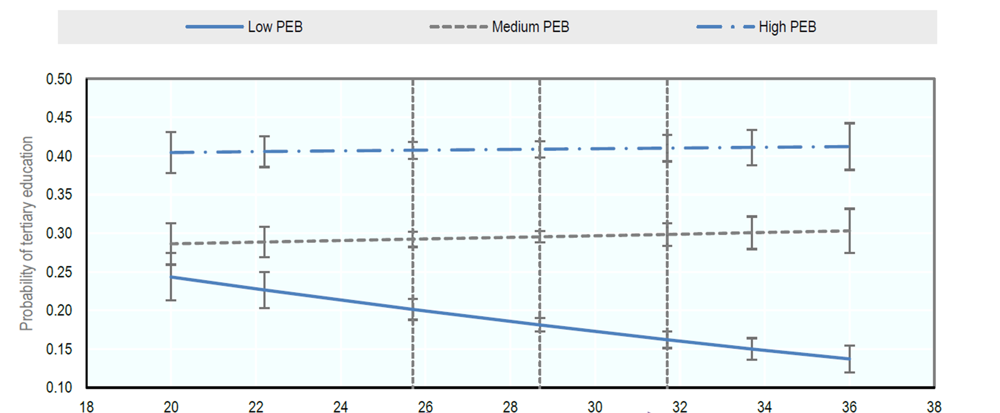

Innovation Policies for the Inclusion of Lower-Income Groups
Several countries have implemented innovation policy programmes to promote the participation of low income groups in research, entrepreneurship and innovation activities. This page presents a range of relevant examples. Additional interesting facts and figures can be found here [1].
Please click on the images to find the full policy cases.
 [2] [2] |
2012-2014 Objective: Find solutions to challenges faced by poor and vulnerable communities, particularly in the environment and energy fields. Target: Poor and vulnerable local communities with unmet needs, particularly relating to the environment and energy fields. Instrument: Grants provided to firms, universities and research institutions that can solve local challenges (identified in consultation with local communities) related to environment and energy. |
 [3] [3] |
2010-2012 Objective: Enable poor people to establish their own business, with the objective of integrating them in local production systems. Target: People around or below official poverty line, with a specific focus on the Roma minority, people living in lagging regions and women. Instrument: Micro-loans and non-financial support (e.g. administrative help, training on financial and business issues). |
 [4] [4] |
Pilot phase Objective: Reduce poverty and increase productivity of rural households in Mexico. Target: Poor rural households (to be eligible, households need to be beneficiaries of the social programme Prospera and live in rural municipalities). Instrument: A technical team develops a tailored development plan for each location, taking into account existing assets and local needs. |
 [5] [5] |
2016-present Objective: Foster economic development in three lagging regions in the south of Mexico, so as to address the gap between north and south. Target: Peripheral regions (three lagging regions in southern Mexico). Instrument: Establishment of three special economic zones in which firms investing and creating jobs would obtain several benefits. |
One of the main factors influencing the capacity of individuals to participate in innovative activities is their level of educational attainment. Highly educated individuals are often more able to generate new ideas, and to recognise the value of knowledge created elsewhere and adapt it to new areas. They are also more flexible in adapting to and identifying new business opportunities arising through rapid technological change and shifts in consumer preferences.
However, low-income families are often unable to afford to keep their children in education an optimal length of time, or to afford high-quality education. Even in countries where quality tertiary-level education is free, low-income groups may not be aware of the benefits of education, and/or may have low incentives to invest in it. This is particularly the case in societies with high levels of inequality, where the probability of tertiary educational attainment of children in lower-income groups is significantly lower than that of children in other income groups (OECD, 2015).
Probability of tertiary educational attainment by parents’ educational background (PEB) and inequality

Notes: The figure shows the average predicted probability that individuals from poor, medium and high parental (educational) backgrounds attain tertiary education as a function of the degree of inequality (Gini points) in the country at the time they were around 14 years old. The level of education of parents (high, medium and low) is used in this figure as a proxy for socio-economic status. Low PEB: neither parent has attained upper secondary education; medium PEB: at least one parent has attained secondary and post-secondary, non-tertiary education; high PEB: at least one parent has attained tertiary education. The bars indicate 95% confidence intervals. The vertical dashed lines indicate the 25th, the median and the 75th percentiles of the underlying distribution of inequality.
Source: OECD, 2015.
References
OECD (2015b), In It Together: Why Less Inequality Benefits All, OECD Publishing, Paris, http://dx.doi.org/10.1787/ 9789264235120-en.